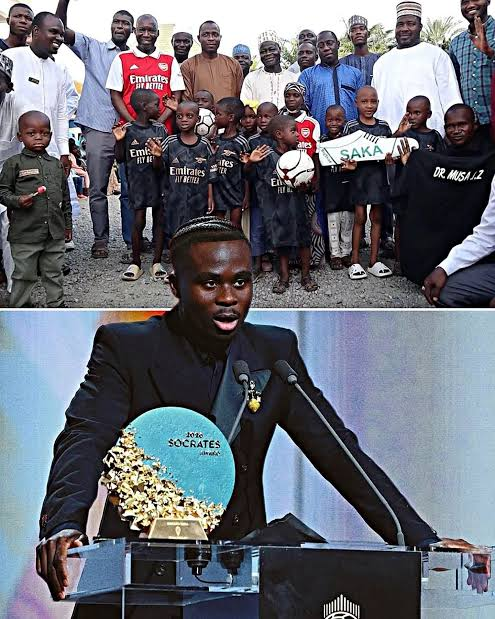

Bukayo Saka

Travail Humanitaire
- Il a financé en collaboration à l'association BigShoe, des centaines d'opérations chirurgicales vitales pour des enfants déshérités au Nigeria, au Kenya, au Rwanda et en Tanzanie.
- Il a fourni des abris d'urgence pour reloger des dizaines de familles après les séismes de 2023 en Turquie et au Maroc.
- Il a fait don de plus de 1 000 uniformes scolaires et de bourses d'études à des familles modestes de Londres.
- Il utilise sa notoriété pour dénoncer le racisme systémique, interpeller les réseaux sociaux et soutenir des campagnes de sensibilisation comme Hand of Hope.